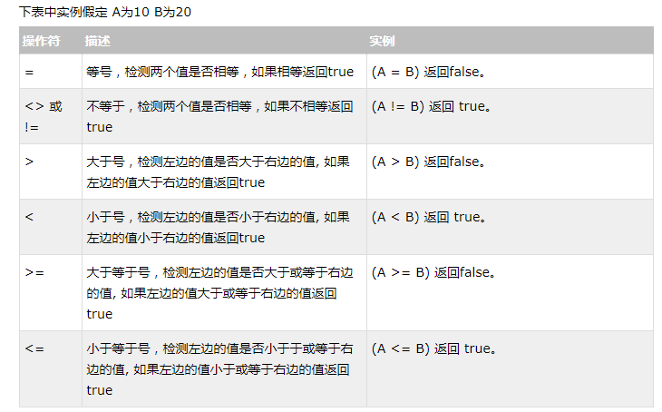

格式： mysql -h主机地址 -u用户名 －p用户密码
①：连接到本机上的MYSQL:
mysql -u root -p
Enter password:密码
注意-u 与 root之间可以有空格也可以没有空格，但是密码前必须没有空格
②：连接到远程主机上的MYSQL（如果远程主机的IP为110.110.110.110，用户名为root,密码为abcd123）：
mysql -h110.110.110.110 -u root -p 123;
③：退出MYSQL命令：exit（回车）
格式：mysqladmin -u用户名 -p旧密码 password 新密码
mysql> show databases;
注意：为了不再显示的时候中文乱码，要修改数据库默认编码。
①：修改MYSQL的配置文件：
my.ini文件里面修改default-character-set=gbk
②：代码运行时修改：
Java代码方式(test为数据库名字)：
jdbc:mysql://localhost:3306/test?useUnicode=true&characterEncoding=utf8
mysql> drop database 数据库名;
mysql> use 数据库名;
mysql> select database();
mysql> select version();
mysql> select now();
显示年月日：
mysql> SELECT YEAR(CURRENT_DATE);
mysql> SELECT MONTH(CURRENT_DATE);
mysql> SELECT DAYOFMONTH(CURRENT_DATE);
mysql> SELECT "welecome to my blog!";
select ((4 * 4) / 10 ) + 25;
需要修改数据表名或者修改数据表字段时，就需要使用到MySQL ALTER命令。
show columns from table_name;
alter table testalter_tbl add id int;
alter table testalter_tbl drop i;
把字段 c 的类型从 CHAR(1) 改为 CHAR(10):
alter table testalter_tbl modify c CHAR(10);
在 change 关键字之后，紧跟着的是你要修改的字段名，然后指定新字段的类型及名称:
alter table testalter_tbl change i j INT;
将数据表 testalter_tbl 重命名为 alter_tbl：
alter table testalter_tbl rename to alter_tbl;
create table student(
sid INT NOT NULL AUTO_INCREMENT,
sname VARCHAR(100) NOT NULL,
sgender VARCHAR(40) NOT NULL,
PRIMARY KEY (sid)
);
INT ：int类型
varchar(100) ：可变字符型，长度为100
NOT NULL ：不能为空
AUTO_INCREMENT：自动增长
primary key : 主键
DROP TABLE student ;
delete from student [where 条件]
①如果没有指定 WHERE 子句，表中的所有记录将被删除（不删除表的结构，表还存在数据库中，只是没有了数据）。
②你可以在 WHERE 子句中指定任何条件
③您可以在单个表中一次性删除记录。
insert into table_name ( sid, sname,sgender,... ) values ( 1, 'jim','男',...);
注意：字符数据，统一用单引号（''）,引起来。
update table_name set sid=new-value1,sname=new-value2.... [where 条件]
①你可以同时更新一个或多个字段。
②你可以在 WHERE 子句中指定任何条件。
③你可以在一个单独表中同时更新数据。
select sid,sname,.. from student [where sid>10];
select field1, field2,...fieldN from table_name1,table_name2...where 条件1 [and /or] 条件2.....

select field1, field2,...fieldN table_name1,table_name2...where field1 like 条件 [and /or] filed2 = 'somevalue'
①如果没有使用百分号(%), LIKE 子句与等号（=）的效果是一样的。
② % 表示任意多个字符，_ 表示任意单个字符。
select field1, field2,...fieldN from table_name1, table_name2...
order by field1, [field2...] [asc [desc]]
①你可以使用任何字段来作为排序的条件，从而返回排序后的查询结果。
②你可以设定多个字段来排序。
③你可以使用 ASC 或 DESC 关键字来设置查询结果是按升序或降序排列。 默认情况下，它是按升序排列。
④你可以添加 WHERE...LIKE 子句来设置条件。
使用 GROUP BY 语句 把表按名字进行分组，并统计每个人有多少条记录：
SELECT sname, COUNT(*) FROM student group by sname;
join 按照功能大致分为如下三类：
inner join（内连接,或等值连接）：获取两个表中字段匹配关系的记录。
left join（左连接）：获取左表所有记录，即使右表没有对应匹配的记录。
right join（右连接）： 与 left join 相反，用于获取右表所有记录，即使左表没有对应匹配的记录。
使用MySQL的INNER JOIN(也可以省略 INNER 使用 JOIN，效果一样)来连接以上两张表来读取w3cschool_tbl表中所有w3cschool_author字段在tcount_tbl表对应的w3cschool_count字段值：
select a.w3cschool_id, a.w3cschool_author, b.w3cschool_count from w3cschool_tbl a inner jointcount_tbl b on a.w3cschool_author = b.w3cschool_author;
以 w3cschool_tbl 为左表，tcount_tbl 为右表:
select a.w3cschool_id, a.w3cschool_author, b.w3cschool_count from w3cschool_tbl a left jointcount_tbl b on a.w3cschool_author = b.w3cschool_author;
以 tcount_tbl 为左表，w3cschool_tbl 为右表:
select b.w3cschool_id, b.w3cschool_author, a.w3cschool_count from tcount_tbl a right joinw3cschool_tbl b on a.w3cschool_author = b.w3cschool_author;
① IS NULL: 当列的值是NULL,此运算符返回true。
② IS NOT NULL: 当列的值不为NULL, 运算符返回true。
③ <=>: 比较操作符（不同于=运算符），当比较的的两个值为NULL时返回true。
④关于 NULL 的条件比较运算是比较特殊的。你不能使用 = NULL 或 != NULL 在列中查找 NULL 值 。
⑤在MySQL中，NULL值与任何其它值的比较（即使是NULL）永远返回false，即 NULL = NULL 返回false 。
⑥MySQL中处理NULL使用IS NULL和IS NOT NULL运算符。